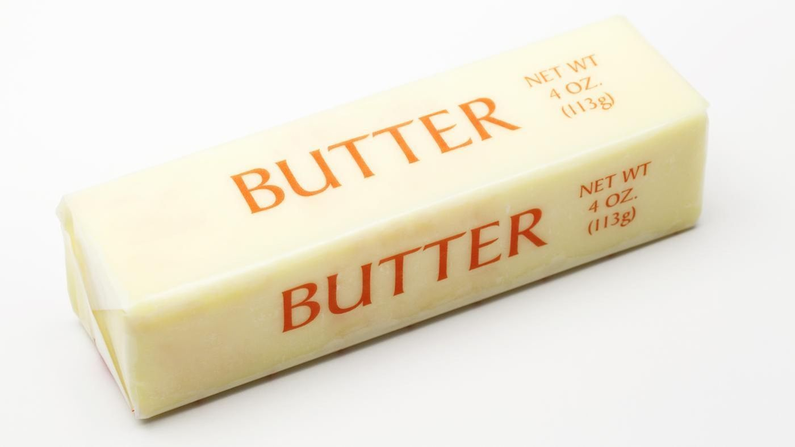
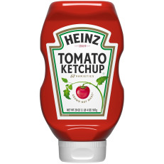
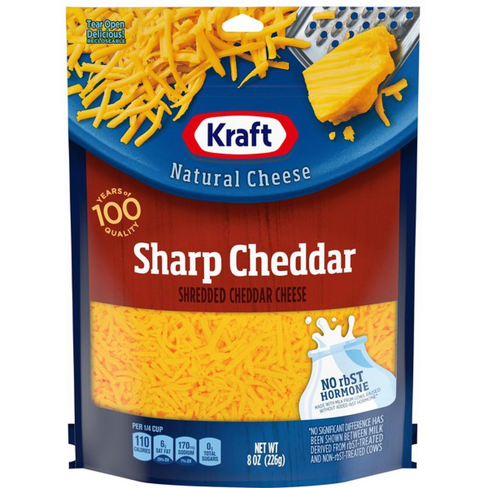

Double Cheeseburger Omelette
Ingredients

- 2 Jumbo eggs

- 1/3 of Ground Beef

- 1/4 tsp.Butter

- 1 tsp. Ketchup

- Store bought Shredded Cheddar Cheese
- Salt and Pepper (add to taste)
Preparation
Crack two eggs in the bowl then put a little bit of salt and pepper and then whisk it well. If you want something tasty for your egg, my choice is just to add a little bit of garlic powder or onion powder. Setit aside.
Procedure
- Get a frying pan, set the stove on medium heat and saute the ground beef till it is well done. Turn off the heat and add the ketchup, mix it well. Set it aside.
- On the same frying pan, put the egg mixture and wait for the bottom of the egg to be half cooked. When this happens, add the shredded cheese and ground beef on top. Then fold the egg to keep all the toppings inside the egg.
- Flip the egg on the other side to make sure all sides are all well done.
Back to main page